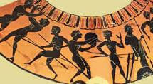
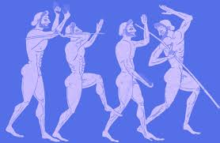
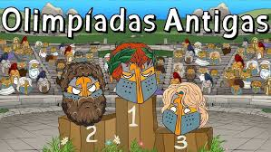
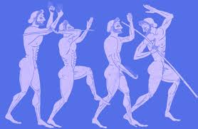
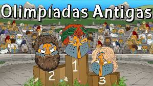

Claro! Aqui está uma breve história das Olimpíadas: Breve História das Olimpíadas Origem na Antiguidade As Olimpíadas têm uma rica história que remonta à Antiguidade. O evento original, conhecido como Jogos Olímpicos da Antiguidade, teve início na cidade-estado grega de Olímpia. A primeira edição registrada ocorreu em 776 a.C. e foi realizada em honra a Zeus, o principal deus do panteão grego. Características dos Jogos da Antiguidade: Frequência: Realizados a cada quatro anos. Eventos: Incluíam corridas de pé, corridas de cavalos, lutas e pentatlo (uma combinação de corrida, salto em distância, lançamento de disco, luta e lançamento de dardo). Participação: Atletas de diversas cidades-estado gregas competiam, e apenas homens livres podiam participar. As mulheres eram excluídas dos Jogos. Declínio e Proibição Os Jogos Olímpicos da Antiguidade foram interrompidos em 393 d.C. pelo imperador romano Teodósio I, que proibiu as competições em um esforço para erradicar os cultos pagãos e promover o Cristianismo como a religião oficial do Império Romano. Após a proibição, os Jogos foram esquecidos por muitos séculos. Renascentismo e Revitalização A tradição dos Jogos Olímpicos foi revitalizada no final do século XIX, graças ao trabalho do Barão Pierre de Coubertin, um pedagogo francês apaixonado por esportes e educação. Coubertin acreditava que o esporte poderia promover a paz e a compreensão entre os povos. Primeiros Jogos Olímpicos Modernos: Data: A primeira edição dos Jogos Olímpicos modernos foi realizada em 1896. Local: Atenas, Grécia. Participantes: 13 países, com cerca de 280 atletas competindo em 43 eventos. Desenvolvimento e Crescimento Desde então, os Jogos Olímpicos cresceram significativamente em tamanho e importância. A cada edição, o número de atletas e países participantes aumentou. Os Jogos passaram a incluir uma variedade crescente de esportes e eventos, refletindo a evolução das práticas esportivas e as mudanças culturais ao longo do tempo. Características dos Jogos Olímpicos Modernos: Frequência: Realizados a cada quatro anos, com uma versão de verão e outra de inverno. Eventos: Incluem esportes variados, desde atletismo e natação até esportes coletivos e esportes radicais. Participantes: Atletas de praticamente todos os países do mundo competem, com os Jogos servindo como um importante evento global de união e competição. Olimpíadas Recentes e Futuras Nos últimos anos, os Jogos Olímpicos têm evoluído para incorporar novos esportes, tecnologias e um foco maior na inclusão e sustentabilidade. As edições mais recentes têm visto a introdução de esportes como skateboarding e escalada, enquanto a edição de Paris 2024 promete novos avanços e uma celebração moderna do espírito olímpico. Próximos Jogos: Paris 2024: A próxima edição dos Jogos Olímpicos de Verão. Milão-Cortina 2026: A próxima edição dos Jogos Olímpicos de Inverno.
.jpeg)
.jpeg) 



Eventos e Modalidades da Antiguidade Os Jogos Olímpicos da Antiguidade incluíam uma variedade de eventos esportivos e culturais. Aqui estão alguns dos principais: Corrida de Estádio: A corrida mais simples e antiga, que cobria uma distância de aproximadamente 192 metros, era o evento inaugural dos Jogos. Pentatlo: Um evento combinado que incluía corrida, salto em distância, lançamento de disco, lançamento de dardo e luta. Luta: Um dos esportes mais populares, onde os atletas competiam em um estilo de combate corpo a corpo. Pancrácio: Uma mistura de luta e boxe, com regras mínimas e apenas uma forma de vitória, a rendição ou o nocaute do oponente. Corrida de Cavalos: Incluía corridas de carruagens e montarias, que eram eventos importantes e atraíam muitos espectadores.